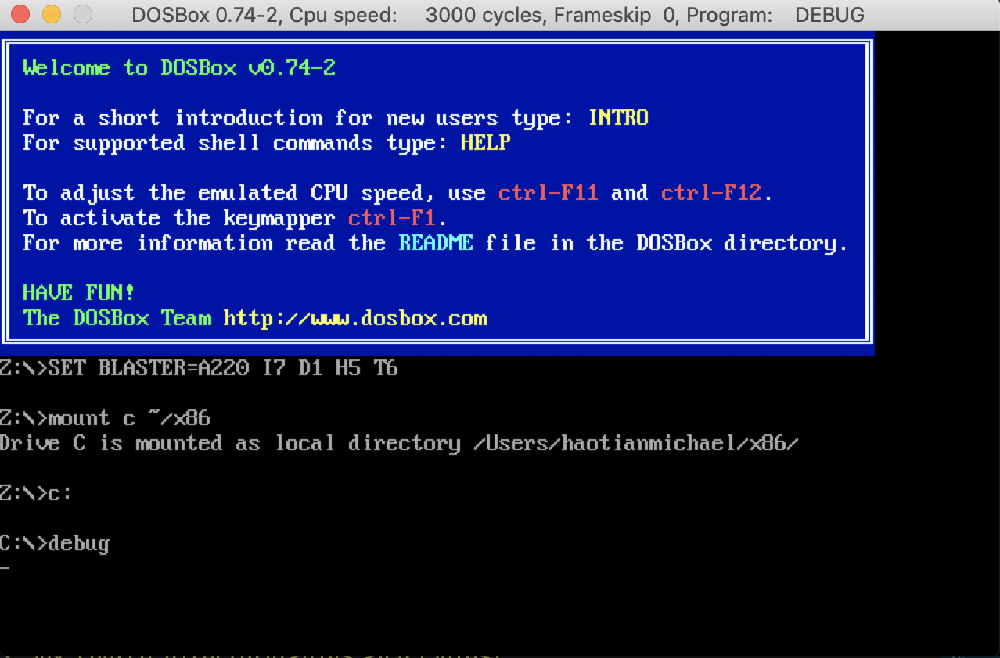

Abstract
王爽老师的《汇编语言》是国内的经典教材。 学习汇编是为了获得底层编程的体验和理解机器运行程序的机理。所以经典的做法往往不是只针对于某一种指令集，而是以一种指令集为手段来深入理解机器工作的原理，体会一个没有操作系统的编程开发环境。正如书中所讲:编程的平台是硬件而不是操作系统。或许这也是汇编语言真正的价值所在吧。
实验环境
全书的实验都是在8086CPU的体系结构下展开的，这也是Intel第一块16位的处理器。 我们有两种办法在自己的计算机上模拟8086:一种是使用WindowsXP系统。一种是采用DOSBox模拟器，第二种比较方便。这里是链接。 本书有17个实验，2个课程设计，5个研究试验。我主要是以其中一些实验为章节展开学习。
全书架构
在我看来，全书应该可以分为这么几个部分: * 硬件模型Chapter.(1、2)————告诉你汇编编程就是程序员以
指令为手段在CPU的寄存器和内存地址空间之间进行数据读写的的过程。 * 汇编结构Chapter.(3、4)————介绍了完整的汇编程序的组成部分:数据段，代码段、栈段。第4章介绍了汇编程序编译的全过程和基本工具的使用。 * 指令核心Chapter.(511)————从第5章作者开始引进一些新的指令，并且展开来讲汇编程序设计的核心部分。介绍了重点的指令比如操作指令,跳转指令，比较指令等及其用法等，并深入介绍了内存寻址的各种花式用法。 * 操作系统层面的应用Chapter.(1217)和操作系统相关的概念比如中断等。
整个学习过程中，寄存器和内存地址空间的读写是贯穿全书的核心，因为所有的操作最终都是产生了对内存或者某一个寄存器的读写。而完成这一切读写功能的就是汇编指令。这也是机器硬件的真正工作原理。
虽然这些部分都可以拆开来了解，但是实际上每一部分还有很多的细节和承上启下的概念，我也是站在我理解的角度对这些内容进行了划分，需要注意的是:全书还有很多的细节比如不同的存储单元和数据处理方式，这些都不是单独某一个章节可以完成的而是贯穿全书实验的前提。所以还是需要通读一遍全书来顺这些概念。
搭建实验条件
- 将下载好的环境包放在
~/x86，作为我们的工作目录。 - 打开DOSBox模拟器。
- 挂载C盘:
mount C ~/x86。 - 进入C盘:
C:。 - 开始实验:
debug。 - 退出程序
quit，退出模拟器exit。
安装成功展示
